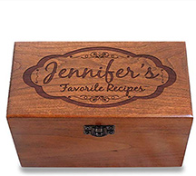

Meatballs Galore!

Buffalo Chicken Meatballs
| Prep Time |
Cook Time |
Total Time |
| 20 mins |
2 hrs |
2 hrs 30 mins |
Servings: 22 –24 meatballs
Ingredients
- 1 pound ground chicken
- 3/4 cup whole wheat Panko bread crumbs
- 1 large egg
- 1 teaspoon kosher salt
- 3/4 teaspoon garlic powder
- 1/4 teaspoon black pepper
- 2 green onions — finely chopped (about 1/4 cup), plus additional for serving
- 3/4 cup buffalo sauce — such as Frank’s
- Crumbled blue cheese or feta cheese — optional for serving
Instructions
Place a rack in the upper third of your oven and preheat the oven to 400 degrees F. Line a large rimmed baking sheet with aluminum foil and lightly coat with nonstick spray. Coat a 3- or 4-quart slow cooker with nonstick spray. In a large mixing bowl, place the ground chicken, bread crumbs, egg, salt, garlic powder, pepper, and chopped green onion. With a fork or your fingers, lightly mix until all of the ingredients are evenly combined, being careful not to compact the meat. Shape into 1 1/2-inch balls and place on the prepared baking sheet.
Bake for 4 minutes, until the meatballs are lightly browned, then flip and bake for 2 additional minutes.
Gently transfer to the slow cooker. Pour the buffalo sauce over the meatballs and, with a large spoon, very gently stir to coat. Cover and cook on LOW for 2 hours, until the meatballs are tender and cooked through.
Serve hot, sprinkled with green onion and feta or blue cheese.